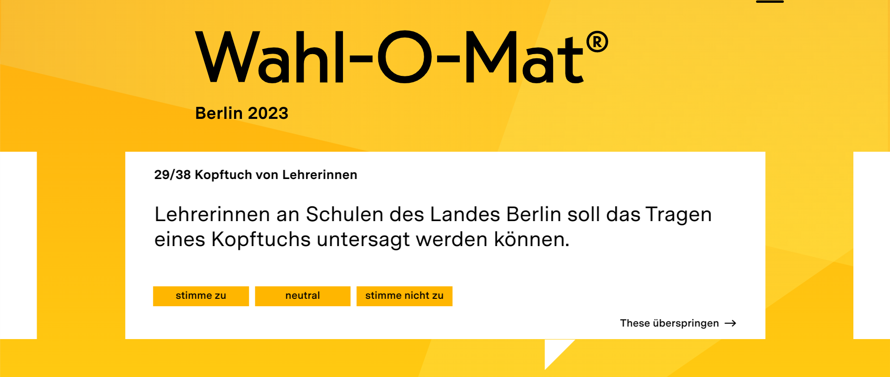

Stammtisch Politique - les élections à Berlin

Code QR
Sven Franck

- Allemand, à Lille depuis 2012, organisateur du Stammtisch sur Meetup
- Co-Président de Volt France
- Chef de projet Nexedi/Rapid.Space, admin Euclidia
Quiz Politique - le Wahl-o-mat

- maintenu par l'Institut de formation politique (Bundeszentrale für Politische Bildung)
- 30-40 questions, réponse par oui/non/neutre
- indique quelle partie correspond le mieux à vos réponses
Wahl-o-mat - Histoire
- Basé sur une appli similaire aux Pays-Bas (Stemwjizer)
- Disponible depuis 2002 pour toutes les élections principales
- Élections nationales 2017 : 61 médias ont intégré l'application
Ressources
- Wikipédia - Wahl-o-Mat (lien)
Quiz Politique - Instructions

- Je vais expliquer les questions et le contexte berlinois
- Vous pouvez répondre sur votre téléphone portable ou me suivre
- Nous verrons quel parti est le plus proche de nos réponses
Code QR
Start
Neutralité carbone (1/38)

« Berlin doit atteindre la neutralité carbone d'ici 2030 »
Cette question est basée sur un référendum berlinois visant à avancer la neutralité carbone de 2045 à 2030 qui doit recueillir un Qurom de 25% des électeurs (613.000 votes). Le referendum aura lieu le 26 mars. 43 000 personnes soutiennent déjà l'initiative.
Ressources
Recherche militaire (2/38)
« Les universités berlinoises doivent être autorisées à mener des recherches à des fins militaires »
Il existe dans certaines universités une "Zivil-Klausel", comme l'a fait la TU Berlin en 1991, dans laquelle elles s'engagent à ne faire de la recherche que dans des domaines civiques. D'autres régions, comme la Rhénanie-du-Nord-Westphalie, se sont éloignées de telles déclarations, notamment parce que la distinction devient aujourd'hui de plus en plus floue (Dual-Use).
Ressources
Les hôpitaux (3/38)
« Tous les hôpitaux berlinois doivent être en mains publiques »
La plupart des hôpitaux de Berlin (42 %) appartiennent à des organismes dits d'utilité publique, comme les églises et les organisations caritatives. Avec 38 %, les cliniques publiques appartenant au Land ou à des fondations de droit public font la suite
Il y a eu des allégations selon lesquelles les hôpitaux publics (Charité, Vivantes) bénéficient d'un financement favorable.
Ressources
- Les hôpitaux demandent au Sénat de Berlin un soutien équitable - (lien)
Sans Abri (4/38)
« Les campements de sans-abri dans les lieux publics centraux doivent être supprimés »
Il y a environ 2000 sans-abri à Berlin (contre 3000 à Lille) et le plan européen vise à mettre fin au sans-abrisme d'ici 2030.
Ressources
- Berliner Zeitung - (lien)
Stationnement des trottinettes électriques (5/38)

« A Berlin, les trottinettes électriques de location ne pourront être garées que sur des aires de stationnement désignées »
Afin de retirer les trottinettes électriques des trottoirs et des zones piétonnes, la ville décide qu'à partir du 1er janvier 2023, les véhicules de micromobilité pourront également être garés gratuitement sur les places de stationnement des voitures.
Ressources
- ZAG - Berlin va autoriser les trottinettes électriques et les vélos à se garer gratuitement sur les places de parking - (lien)
Feux d'artifice du Nouvel An (6/38)

« Les feux d'artifice privés pour le Nouvel An doivent être autorisé dans toute la ville »
Lors de la célébration du nouvel an à Berlin, de nombreux pompiers et forces de police ont été attaqués avec des roquettes, faisant plusieurs blessés. 200 personnes ont été arrêtées, 50 Allemands, le reste provenant de 18 autres nationalités, ce qui a déclenché un débat sur le succès des efforts d'intégration et de savoir si les feux d'artifice privés doivent encore être autorisés.
Ressources
Rémunération des éducateurs (7/38)
« Les éducateurs de l'enseignement primaire doivent recevoir le même salaire que les enseignants »
Après une réforme de 2018, les enseignants du primaire perçoivent désormais un salaire mensuel de 5300€ brut, alors que les éducateurs, qui travaillent souvent main dans la main ne perçoivent que 3600€ brut.
Ressources
- Tagesspiegel - Écart salarial dans les écoles primaires berlinoises : les éducateurs manquent de valorisation, 2019 - (lien)
- Tagesspiegel - Rémunération des enseignants à Berlin : un saut salarial pour les enseignants du primaire - (lien)
- oeffentlicher-dienst - Quel est le salaire des éducateurs ? - (lien)
Droite de vote (8/38)

« Seuls les Allemands et les ressortissants des pays de l'UE doivent continuer à pouvoir voter aux élections des assemblées de district »
Seules les élections européennes et municipales accordent le droit de vote aux citoyens du pays respectif ET aux citoyens d'autres États membres de l'UE. Cette règle s'applique également aux élections à Berlin. Toutefois, plus de 800 000 des 2,4 millions de citoyens berlinois en âge de voter ne sont ni allemands ni ressortissants d'un État membre de l'UE, ce qui signifie que 30 % des citoyens ne peuvent pas voter. Dans certains districts à Berlin, ce pourcentage est encore plus élevé.
Ressources
- Berliner Zeitung - Une Berlinoise qui ne peut pas voter : laissez-nous aussi participer aux élections ! - (lien)
Gratuité des transports publics (9/38)
« A Berlin, l'utilisation des transports publics locaux doit être gratuite »
Après le ticket à 9€ de cet été, des discussions sont en cours pour créer un ticket permanent permettant l'utilisation de tous les transports publics. Un ticket de 49€/mois pour toute l'Allemagne est en discussion pour mai 2023. Berlin offre déjà un ticket à 29€/mois pour tous les transports publics dans les zones AB (ticket solidaire à 9€) comme solution provisoire jusqu'à ce qu'un ticket national soit disponible.
Ressources
- Tip Berlin - Billet à 29 euros : voici les règles du jeu - (lien)
Notes dans les primaires (10/38)

« Dans les écoles primaires berlinoises, les notes doivent être attribuées dès la première classe »
Réduction du nombre de programmes du RBB (11/38)
« Le Rundfunk Berlin-Brandenburg (RBB) devrait réduire le nombre de ses programmes radiophoniques »
Tous les Länder ont leur propre radio et télévision publique, financée par l'équivalent allemand de la taxe audiovisuelle. À Berlin, il s'agit de la RBB, qui a été prise dans un grand scandale de corruption l'année dernière à propos de sa présidente, Patricia Schlesinger, qui a mis en place des systèmes de primes opaques et dépensé des millions pour son bureau et un style de vie somptueux. Pour faire table rase, la RBB doit maintenant économiser environ 50 millions d'euros dans deux ans, notamment en réduisant ses effectifs et son programme.
Ressources
Accueil de réfugiés (12/38)
« Berlin doit accueillir davantage de réfugiés »
En 2022, Berlin a enregistré 14 000 nouvelles demandes d'asile (19/1000 habitants, comme Brême et Hambourg). Au total, 114 465 réfugiés vivent actuellement à Berlin (3,6 millions d'habitants). Il y a également entre 53.000 et 100.000 citoyens ukrainiens à Berlin. Ils ne sont pas considérés comme des demandeurs d'asile et ont donc le droit de travailler. Au total, Berlin accueille actuellement plus de personnes que pendant la crise des réfugiés en 2015/2016, ce qui pose non seulement des défis administratifs à la ville (Lille 996/200000 = 0,5%, Berlin 67000/3600000 = 1,8%...)
Ressources
Entreprises privées et universités (13/38)

« Les universités berlinoises doivent coopérer davantage avec les entreprises privées »
La question générale est de savoir dans quelle mesure les universités doivent s'adapter aux besoins spécifiques de l'industrie.
Ressources
- IDW online Berlin - Coopération pour une plus grande dynamique d'innovation : la CCI et la HTW Berlin renforcent leur collaboration - (lien)
Infrastructure de transport (14/38)
« Lors de l'aménagement de l'infrastructure de transport de Berlin, le trafic cycliste et piétonnier doit avoir la priorité sur le trafic automobile »
La loi sur les mobilités de 2018 a donné la priorité à la circulation des bus, des trams, des vélos et des piétons avant la circulation des voitures pour le développement futur des infrastructures urbaines et de transport.
Ressources
- Berlin.de - Loi sur la mobilité : priorité au bus, au train, au vélo - et aux piétons(lien)
Quota de femmes (15/38)
« Un quota de femmes obligatoire doit être fixé pour les postes de direction des entreprises appartenant au Land »
Berlin's share of women in leading positions stagnates since 5 years at 36.4% (East germany 35%, west germany 24.9%). In public services in Berlin in the same time, reducation from 60,5% to 49,5%.
Ressources
Bürgergeld (16/38)
« Les bénéficiaires du Bürgergeld devraient pouvoir voir leurs allocations réduites dès le premier jour s'ils refusent des offres d'emploi »
Bürgergeld est le nouveau nom de Hartz IV, l'allocation chômage allemande. En Allemagne, vous recevez ~60% de votre salaire net de la dernière année en cas de chômage pendant 12 mois (moins de 50 ans) ou 24 mois (plus de 50 ans). Ensuite, vous recevez le Bürgergeld, qui est actuellement de 502€/mois (+ loyer). En cas de non-respect des obligations ou de refus d'une offre d'emploi, le Bürgergeld peut être réduit jusqu'à 30 %. Pour les moins de 25 ans, les sanctions il n'y a pas des sanctions.
Ressources
- Bürgergeld.org - Sanctions - (lien)
Les animaux dans les cirques (17/38)

« Les cirques avec des animaux dans leur programme ne doivent pas être autorisés à utiliser des terrains appartenant à l'Etat »
Un litige juridique est en cours entre les associations de protection des animaux et les cirques sur le traitement des animaux. En 2019, un cirque a déjà été condamné à se déplacer vers un autre lieu. Le cirque est revenu à Berlin sans animaux sauvages en 2022.
Ressources
Impôt sur les acquisitions foncières (18/38)
« L'impôt sur les acquisitions foncières doit être réduit lors de l'achat d'un logement pour son propre usage »
La taxe actuelle à payer sur l'acquisition de biens immobiliers est de 6,0 % (3,5 % en Bavière, 6,5 % dans le Brandebourg) et constitue l'une des principales sources de recettes des Länder.
Ressources
- Steuern.de - Impôt sur les acquisitions foncières - (lien)
Toilettes unisexes (19/38)
« Dans chaque bâtiment public du pays, il doit y avoir au moins une toilette unisexe qui peut être utilisée indépendamment du sexe »
Presque toutes les toilettes sont soit pour les femmes, soit pour les hommes. Étant donné que de plus en plus de personnes ne souhaitent pas s'identifier à l'un ou l'autre genre, les bâtiments publics à Berlin devraient également proposer au moins une toilette unique et non discriminatoire.
Ressources
- Berlin.de - Toilettes publiques sans discrimination - (lien)
Des spécialistes venus de l'étranger (20/38)

« Berlin doit continuer à recruter du personnel qualifié à l'étranger »
Les loyers élevés, le manque de logements, les bas salaires en général rendent Berlin très peu attrayante pour les travailleurs qualifiés. Le taux de décrochage scolaire le plus élevé d'Allemagne, de nombreux jeunes manquant de compétences de base. Un taux de chômage élevé de 8,7% (180 000), mais plus de 100 000 travailleurs qualifiés manquants (2035 : 400 000) - d'apprentis, d'alternants, d'universitaires, de travailleurs qualifiés, de maîtres artisans.
Ressources
- Berliner Zeitung - Berlin souffre d'une extrême pénurie de main-d'œuvre qualifiée - (lien)
Friedrichstraße (21/38)

« La Friedrichstraße doit être ouverte en permanence à la circulation automobile »
Le gouvernement de Berlin a transformé certaines parties de la Friedrichstrasse, l'une des principales artères de la ville, en zone piétonne - une mesure célébrée par un grand nombre de personnes, mais aussi fortement critiquée et qui fait actuellement l'objet d'une procédure judiciaire.
Ressources
- TAZ - Attaque contre la liberté de circulation - (lien)
Image de la famille (22/38)
« Dans les crèches et les écoles berlinoises, l'image traditionnelle de la famille - père, mère, enfants - doit être transmise en priorité »
La famille classique n'est aujourd'hui qu'une des nombreuses constellations parentales. Pourtant, l'État continue de valoriser l'image de la famille classique.
Ressources
Aliments consommables (23/38)
« Berlin doit s'engager à interdire aux supermarchés de jeter des aliments consommables »
De nombreuses associations environnementales et caritatives de Berlin demandent une loi contre le gaspillage de produits alimentaires dans les supermarchés, qui ne tient même pas compte des produits jugés non visuellement corrects qui n'arrivent jamais dans les rayons des supermarchés (16,5 millions de tonnes par an). A Berlin, il est question de légaliser le "containern" - chercher des aliments consommables dans les poubelles des supermarchés - ou d'interdire de jeter des aliments = il faut les donner aux associations caritatives.
Ressources
Écoles spécialisées (24/38)

« Les écoles spécialisées pour enfants handicapés doivent être maintenues en permanence à Berlin »
Comme en France, l'Allemagne manque de personnel enseignant, et notamment de personnel enseignant spécialisé, formé pour travailler avec des enfants handicapés. En 2009, l'Allemagne a adopté le droit de l'ONU à l'éducation inclusive.
Ressources
Achat de parts de GASAG (25/38)
« Le Sénat doit acheter des parts de l'entreprise berlinoise de gaz et d'électricité GASAG »
En 2014, Berlin a déjà essayé de faire passer l'approvisionnement en gaz et le réseau de gaz de la société privée GASAG/NBB/Vattenfall à la société publique Berlin Energie, ce qui a échoué devant les tribunaux en 2021. Berlin souhaiterait à terme être propriétaire des réseaux de gaz et de chaleur de la ville, car ils sont tous deux encore alimentés par des combustibles fossiles. Pour ce faire, Berlin veut acheter une majorité de GASAG avec Engie et EON.
Ressources
- Tagesspiegel - Deal pour l'achat de l'approvisionnement en énergie ? Le Sénat berlinois prolonge à la surprise générale le contrat de concession pour le réseau de gaz - (lien)
- Tagesspiegel - Re-municipalisation de l'approvisionnement en énergie : Berlin veut acheter le réseau de gaz et de chaleur de Vattenfall - (lien)
Contrôles d'identité (26/38)
« La police berlinoise doit pouvoir continuer à effectuer des contrôles d'identité indépendants de tout motif suspect »
Il y a un débat en cours sur la discrimination potentielle et le profilage racial des forces de police de Berlin.
Ressources
Une année de maternelle obligatoire (27/38)
« La dernière année de maternelle avant l'entrée à l'école devrait être obligatoire à Berlin »
À Berlin, 90 % des parents utilisent des créches et le gouvernement a l'obligation légale de fournir un nombre suffisant de places, ce qu'il n'est pas en mesure de faire (également à Berlin). Les partisans d'une année obligatoire affirment que le fait de passer au moins un an dans un KITA avant de commencer l'école favorise le développement scolaire et social. Les opposants affirment qu'il n'y a de toute façon pas assez de places.
Ressources
- Morgenpost - La crèche obligatoire pour les enfants de cinq ans n'aura pas lieu pour l'instant - (lien)
Frein à l'endettement (28/38)

« Berlin doit continuer à respecter la limitation légale des nouveaux emprunts ("frein à l'endettement") »
L'Allemagne dispose d'un frein à l'endettement dans sa Grundgesetz, qui stipule que, sauf dans certaines circonstances, les budgets doivent être établis sans assumer de nouvelles dettes. Tous les Länder doivent avoir des budgets équilibrés à partir du 01.01.2020 et ne peuvent pas contracter de nouvelles dettes.
Ressources
- Berlin.de - Mise en œuvre du frein à l'endettement dans le Land de Berlin - (lien)
Port du voile des enseignantes (29/38)
« Il devrait être possible d'interdire le port du foulard aux enseignantes des écoles du Land de Berlin »
Age de vote à partir de 16 ans (30/38)

« Les jeunes doivent pouvoir voter dès 16 ans pour les élections à la Chambre des députés de Berlin »
Compétences du Sénat (31/38)

« Le Sénat berlinois doit obtenir davantage de compétences par rapport aux arrondissements »
Sinti et Roms (32/38)

« La culture et la langue des Sinti et Roms allemands doivent être davantage soutenues financièrement par le Land »
Bodycams (33/38)

« La police berlinoise doit pouvoir continuer à utiliser des caméras personnelles ("bodycams") »
Heures d'ouverture (34/38)

« Tous les magasins de Berlin devraient pouvoir ouvrir le dimanche »
Personnes issues de l'immigration (35/38)
« Un quota obligatoire de personnes issues de l'immigration doit être fixé pour les recrutements dans la fonction publique du Land de Berlin »
Réduction des sanctions contre la Russie (36/38)

« Le Land de Berlin doit s'engager pour que les sanctions contre la Russie soient assouplies »
A100 (37/38)
« L'autoroute A100 doit être élargie comme prévu »
Expropriation (38/38)

« Le Land de Berlin doit exproprier les sociétés de logement privées en échange d'une indemnisation »